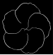
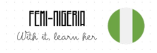

Si le féminisme vous intéresse et que vous voulez en connaître plus sur d’autres pays et d’autres féministes, vous pouvez aller voir les projets de mes camarades de TD qui ont tous fait sur des sujets très intéressants.



Femina - Julie ALBINI
Victims - Nafissa ARNONE
Féminisma - Mélina BOUCHELLEGHEM
Réuniverse - Johanne BOCKSTALLER
Femi-nigéria - Maxence CANTE
Les origines du féminisme en Europe - Enzo CANONICO
Women's Work Lilian - CHESNEAU